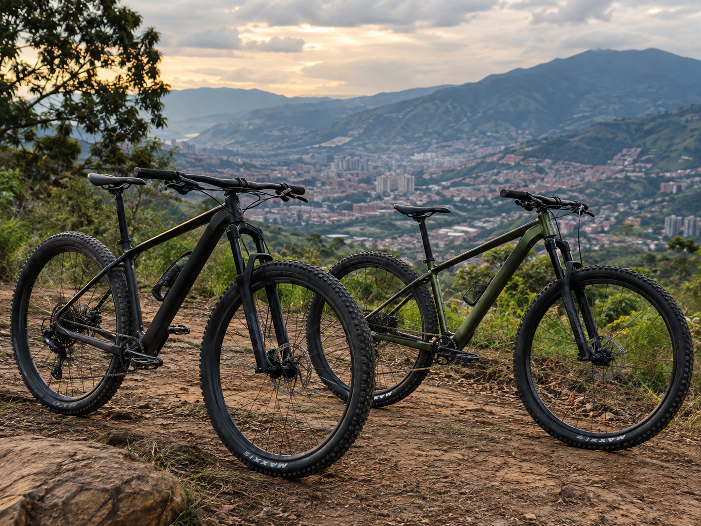
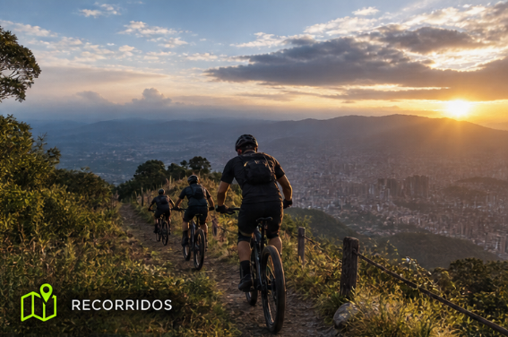
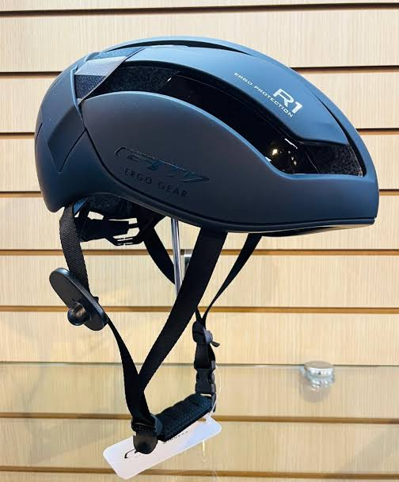

Alquiler de Bicicletas
Alquila una bicicleta por horas o por días y disfruta de tus recorridos a tu propio ritmo. Incluye casco y candado.
Descubre nuevos caminos y disfruta de la libertad de recorrer el mundo sobre ruedas.

En Rueda Libre creemos que cada camino es una oportunidad para vivir una aventura.Somos un negocio dedicado al alquiler de bicicletas para que disfrutes de la naturaleza y conozcas lugares increibles.
Nuestro propósito es ofrecer una experiencia cómoda, segura y divertida. Queremos que cada recorrido se convierta en un recuerdo inolvidable
Contamos con diferentes opciones para acompañarte en tus aventuras
Alquila una bicicleta por horas o por días y disfruta de tus recorridos a tu propio ritmo. Incluye casco y candado.

Descubre paisajes y lugares especiales con nuestros recorridos guiados. Una experiencia ideal para compartir y conocer nuevos caminos.

Tu seguridad es importante. Disponemos de accesorios básicos para ayudarte a disfrutar de cada trayecto con mayor tranquilidad.
Alquilar tu bicicleta es muy sencillo. Sigue estos pasos:
Queremos que disfrutes de una experiencia préctica y agradable.
¿Estás preparado para tu próxima aventura? Consulta el mapa y organiza tu recorrido